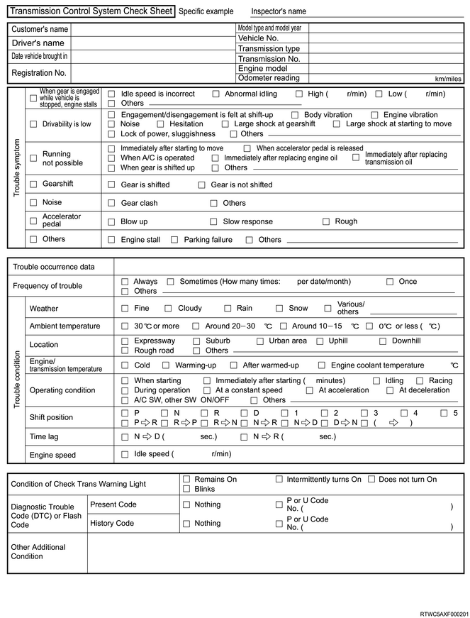
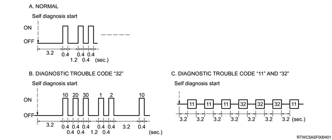

Non-OEM parts
In all failure diagnoses, the system is adjusted to operate with genuine parts installed. Accordingly, if a commercially available, general sensor or switch, etc. is installed, it makes a wrong diagnosis, and the check trans warning light blinks.
Commercial electronics, such as cellular phones, stereos, and anti-theft devices, may emit electromagnetic interference (EMI) into the control system if they are improperly installed. This may cause a false sensor reading, resulting in blinking of the check trans warning light. When conducting a failure diagnoses, turn OFF the power source of all commercially available parts, or remove them.
Improper vehicle maintenance
Since the sensitivity of the system check is extremely high, the check trans warning light may blink when the vehicle is not properly maintained.
Clogging of the oil strainer or deposits on the oil pan due to lack of transmission fluid changes or use of improper transmission fluid may cause a vehicle problem.
Poor vehicle maintenance is not classified as a non-vehicle failure, but since the sensitivity of system check is high, vehicle maintenance schedules must be more strictly observed.
Basic knowledge of the required tools
When performing diagnostic procedures, lack of basic knowledge could result in incorrect diagnosis or damage to components. Do not attempt to diagnose a related problem without this basic knowledge.
Basic understanding of hand tools is necessary to make the most of the service manual.
Check trans warning light
Basically, the check trans warning light blinks when a failure affecting the vehicle performance occurs and a DTC is detected.
If the check trans warning light blinks, and it is suspected that the blinking is caused by a failure due to driving performance degradation of the vehicle, the transmission control system check must be conducted.
Transmission control system check
The transmission control system check provides the following information.
ECU identification
ECU function to communicate via the serial data circuit
Status and identification of the stored DTCs
Confirmation of appropriate diagnosis procedures by using the transmission control system check.
Check sheet
Check sheet is used to verify customer complaints. It is required to understand the normal operating behavior of the system and verify that a customer complaint is a valid failure of the system.

Reading DTCs by flash codes
The TCM is the Data Link Connector (DLC) is a device for communication with the TCM. The DTCs stored in the TCM memory can be read either through a hand-held diagnostic scanner such as a scan tool that can be connected to the DLC or by counting the number of flashes of the check trans warning light when the diagnostic test terminal of the DLC is grounded. Reading is enabled by short-circuiting DLC terminal 12, which is the diagnosis request terminal, and DLC terminals 4 or 5, which is the ground wire. Once terminals 12 and 4 or 5 have been connected, the ignition switch must be turned to the ON position, with the engine not running. The check trans warning light indicates DTCs for present and past failures. The check trans warning light repeats the indication 3 times for 1 DTC. When multiple failures are present, indications are made in ascending order of the DTC numbers. If there is no DTC stored in the TCM memory, the check trans warning light shows code 12. The blinking DTC display continues as long as the DLC is shorted.

DTC type definitions
There are 5 types of A, B, C, D, and E for DTCs. Among these DTCs, Type A and B DTCs are related to emission whereas Type C, D, and E DTCs are related to items other than emission.
Actions taken when a DTC is set, Type A
When the diagnostic runs and fails, the TCM flashes the check trans warning light.
The TCM requests the MIL to be illuminated when the diagnostic runs and fails.
The TCM records the operating conditions at the time the diagnostic fails. The TCM stores this information in the Failure Records.
The ECM records the operating conditions at the time the diagnostic fails. The ECM stores this information in the Freeze Frame/Failure Records.
The ECM stores DTC P0700 in ECM history at the time the diagnostic fails.
Actions taken when a DTC is set, Type B
When the diagnostic runs and fails, the TCM flashes the check trans warning light on the second consecutive driving cycle.
When the diagnostic runs and fails, the TCM requests to illuminate the MIL on the second consecutive driving cycle.
When the diagnostic reports a failure on the second consecutive driving cycle, the TCM stores this information in the Failure Records.
The ECM records the operating conditions at the time the diagnostic fails. The ECM stores this information in the Freeze Frame/Failure Records.
The ECM stores DTC P0700 in ECM history during the second consecutive driving cycle in which the diagnostic fails.
Conditions for clearing the MIL, check trans warning light and the DTC, Type A and B
When the diagnostic runs and does not fail, the TCM turns OFF the check trans warning light after the first driving cycle.
When the diagnostic runs and does not fail, cancel the MIL request after third driving cycle.
A history DTC clears after 40 consecutive warm-up cycles, if no failures are reported.
Use a scan tool to clear the MIL, check trans warning light and the DTC.
When clearing the DTC without a scan tool, jumper pins No. 12 and No. 4 (or No. 5) of DLC when at least 1 second has passed after turning ON the ignition switch, and remove the jumper wire within 1 to 6 seconds after jumpering.
Actions taken when a DTC is set, Type C
When the diagnostic runs and fails, the TCM flashes the check trans warning light.
The TCM records the operating conditions at the time the diagnostic fails. The TCM stores this information in the Failure Records.
Actions taken when a DTC is set, Type D
When the diagnostic runs and fails, the TCM flashes the check trans warning light on the second consecutive driving cycle.
If the diagnostic reports a failure on the second consecutive driving cycle, the TCM stores this information in the Failure Records.
Conditions for clearing the check trans warning light and the DTC, Type C and D.
When the diagnostic runs and does not fail, the TCM turns OFF the check trans warning light after one driving cycle.
A current DTC clears after three consecutive driving cycles that the diagnostic runs and passes.
A history DTC clears after 40 consecutive warm-up cycles, if no failures are reported.
Use a scan tool to clear the check trans warning light and the DTC.
When clearing the DTC without a scan tool, jumper pins No. 12 and No. 4 (or No. 5) of DLC when at least 1 second has passed after turning ON the ignition switch, and remove the jumper wire within 1 to 6 seconds after jumpering.
Actions taken when a DTC is set, Type E
The TCM does not flash the check trans warning light.
The TCM records the operating conditions at the time the diagnostic fails. The TCM stores this information in the Failure Records.
Conditions for clearing the check trans warning light and the DTC, Type E
The current DTC is cleared after one driving cycle that the diagnostic runs and passes.
A history DTC clears after 40 consecutive warm-up cycles, if no failures are reported.
Use a scan tool to clear the DTC.
When clearing the DTC without a scan tool, jumper pins No. 12 and No. 4 (or No. 5) of DLC when at least 1 second has passed after turning ON the ignition switch, and remove the jumper wire within 1 to 6 seconds after jumpering.